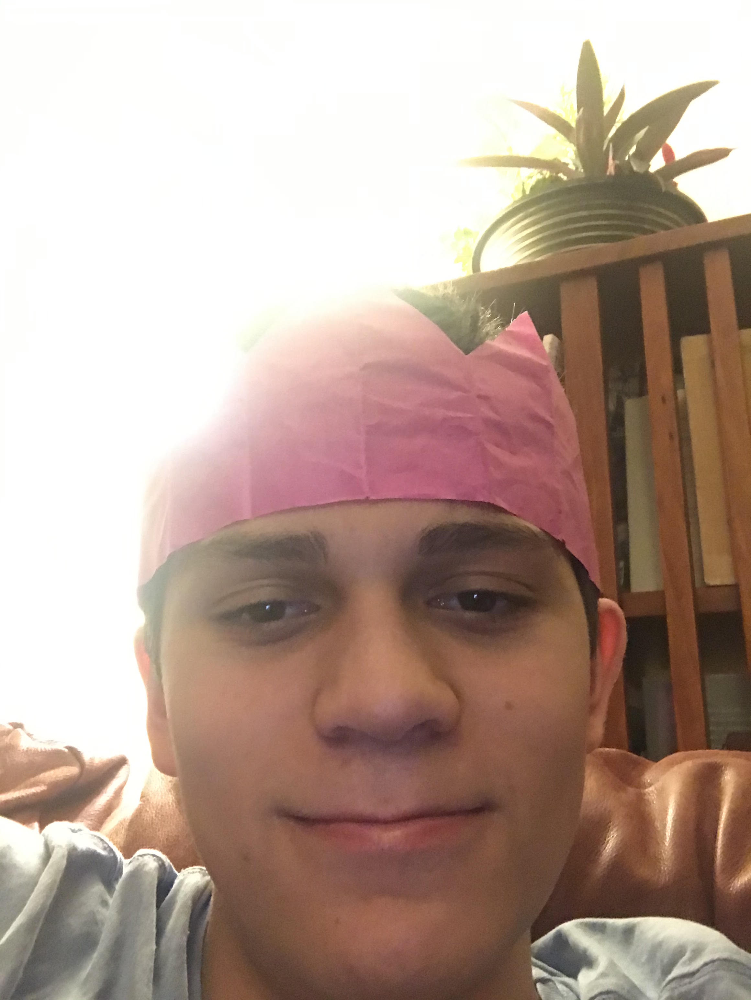

My life began when I was very young, 0 years old to be exact. I was born in saskatoon, sakatchewan and lived there until I was 8. Right now i'm in grade nine but am 15, cause I moved to californa and didn't do kindergarten that year, so I am a year older than normal.I love video game such as of video games such as Escape From Tarkov, Rainbow Six Siege and ARK: Survival evolved. I built a PC about a year ago with the help of youtube videos and use it a ton.
I chose Computer Studies because I love using PCs and gaming, I've doen a small amount of coding before and it was very fun, so I decided this class would be a good choice. I've always wanted to learn how to make video games and code better so that's why I chose this course.
